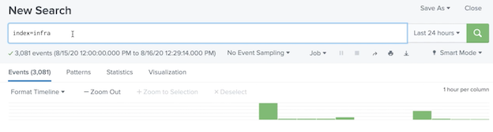
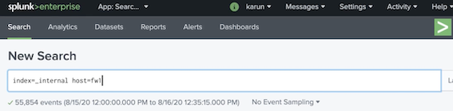

4 Splunk Administration: Configuring Distributed Search
1 Understanding distributed search
- Anatomy of a search
- Distributed search overview
- Search peers
- Knowledge bundle
- Knowledge bundle replication
1-1 Anatomy of a Search
The Splunk Platform

Standalone Splunk

Technically, this is known as inverted index
Search Overview
- During indexing, Splunk indexers convert the machine data stream into searchable events which are stored in indexes
- Indexes contain compressed raw data (journal.gz) and time-series index files (TSIDX)
- Indexes store data in time-oriented buckets (hot, warm, cold and frozen)
- Indexers perform the search and return the results
- Search results and meta data are stored as search artifacts until the search job expires
How Splunk Retrieves Data

- Timeframe： Identify data buckets based on the time range
- Bloom Filter： Calculate bloom filter on base search and compare against bucket’s bloom filter
Bloom Filter
- Bloom filter is a bit array created by running search terms through set of hashing algorithm
- Splunk creates a bloom filter for each bucket
- When a search is run, Splunk calculates the bloom filter for the base search, and compares with the bucket bloom filter
- Only the matching buckets are opened
- Having as many filtering terms as possible in the base search improves search performance
Search Artifact
- Contains results and metadata
- Stored on
$SPLUNK_HOME/var/run/dispatch - Deleted when the search job expires
- Each job has its own directory
- Too many search artifacts can cause performance degradation
Contents of Dispatch Directory

Dispatch Directory Naming Convention
Type of search
- Ad-hoc: Unix Time of the search. (1596904237.80)
- Saved search:
<run by user>__<context_user>__<app>__search (admin__admin__search__mysearch_ 1596904237.80)
- Scheduled search
scheduler_nobody__web__mysearch__ 1596904237.80
- Remote search
remote_<peer>_<search>
Default Time To Live of Search Artifacts
- Ad-hoc : 10 minutes
- Manually invoked saved search: 10 minutes
- Scheduled search without alert action: Twice the scheduled period
- Scheduled search with email action: 24 hours
- Scheduled search with script action: 10 minutes
- Scheduled search with summary indexing action 2 minutes
Changing the TTL
- Global search behavior can be updated in limits.conf using ttl or
remote_ttlparameters under search stanza - Individual sched searches can override TTL using
savedsearches.confor using Splunk Web - Alert actions can override TTL using
alert_actions.confor using Splunk Web
Overriding Alert Actions TTL
1-2 Distributed Search Overview
Distributed search separates search management & presentation layer from indexing & search retrieval layer
Distributed Environment
Scaling

How Distributed Search Works?
- Search head receives user’s search request
- Search head dispatches searches to the search peers (indexers)
- Search peers run the search on behalf of search heads and return the results to the search head
- Search head merges the results from all the search peers
- Search head runs additional filtering and transformation commands (if applicable) and returns the results to the user
Search Peers
- The indexers that participate in distributed search are called search peers
- Search peers must be added in search heads
- If the search head participates in indexer cluster, search peers are automatically added
- When a peer goes down, search head removes it from the peers list (default timeout 10 seconds)
1-3 Splunk Knowledge Bundle
Knowledge Bundle
- Archive of knowledge objects that search head sends to all search peers
- Includes knowledge objects such as event types, saved searches.
- Search peers need these knowledge objects to execute searches on behalf of search heads
- Contains a subset of
$SPLUNK_HOME/etc/system,$SPLUNK_HOME/etc/apps&$SPLUNK_HOME/etc/users
Location of Knowledge Bundle
- Search Head
$SPLUNK_HOME/var/run(.bundleor.deltaextension) - Search Peers:
$SPLUNK_HOME/var/run/searchpeers
Content of Knowledge Bundle
On the search peers:
$SPLUNK_HOME/var/run/searchpeers/<bundleid>
- system
- users
- apps
- bundle.info
1-4 Knowledge Bundle Replication
As part of distributed search, search head periodically distributes its knowledge bundle to its search peers
What is Replicated?
Search head periodically replicates knowledge bundle in the background or when initiating a search
Full bundle
The entire knowledge bundle
Delta
Changes since the last full bundle push
Four Replication Policies
- Classic： Search head directly replicates to all search peers
- Cascading： Replicates to a subset of search peers which replicates to other search peers & so on
- Mounted: Search head places the knowledge bundle in shared storage (NOT recommended)
- RFS: Search head uploads knowledge bundle to a remote file system
Configuring Replication Policy
The configuration file must reside on the search head
distsearch.conf
[replicationSettings]
replicationPolicy = [classic | cascading | rfs | mounted]
connectionTimeout = 60
maxBundleSize = 2048
Managing Knowledge Bundle
- You can customize what gets replicated
- Use
distsearch.confto blacklist large files you don’t need replicated
[replicationBlacklist]
excludeLookups = apps/myapp/lookups/mybiglookup*
Monitoring Knowledge Bundle Replication
- Splunk Web
Settings -> Distributed Search - Monitoring Console
Search -> Distributed Search - Command line
$SPLUNK_HOME/bin/splunk show bundle-replication-status - REST API
/services/search/distributed/bun dle/replication/config
Demo
- Review search in standalone environment
- Run an ad-hoc search and check the dispatch directory
- Review job inspector and search.log
- Change the default TTL of ad-hoc search
- Change the default TTL of a scheduled search
index=main sourcetype=secure Failed

arg.txt


2 Configuring Distributed Search
Overview
- Preparing indexers to participate in distributed search
- Adding search peers
- Configuring distributed search groups
- Monitoring search peers
- Quarantining search peers
2-1 Configuration at a Glance

Setting up Distributed Search
- Install the same version of Splunk Enterprise in search head and search peers
- Search head and search peers must use a license master
- Setup the same indexes in all search peers
- Create a user with
edit_usercapability on all search peers - Add search peers in search head via Splunk Web
Preparing the Indexer
- Access: Create a user with
edit_usercapability - Index: Ensure indexes have data coming in from forwarders
- Connectivity： Ensure search head can connect to management port (8089) of the indexer
2-2 Adding Search Peer Using Splunk Web
Adding Search Peer Using Splunk Web
Verifying Distributed Search
- Examine the search peer in distributed search page in Splunk Web. Look for Replication Status
- Run a search to retrieve events from an index
- Check the internal logs on the indexer
Verifying Search Peers
2-3 Distributed Search Groups
Distributed Search Groups
- Search peers configured into specific groups using
distsearch.conf - Enables to run searches on targeted indexers
- Use
splunk_server_groupoption in SPL to specify the group
Distributed search groups should be avoided in indexer clusters
- The primary copy of a data bucket can be in any indexer
- Enables to run searches on targeted indexers
- Can be employed in multiple indexer cluster scenarios
Configuring Distributed Search Groups
distsearch.conf
[distributedSearch]
servers = https://172.31.22.35:8089,https://172.31.27.11:8089,https://172.31.22.115:8089
[distributedSearch:sec]
servers = https://172.31.22.35:8089,https://172.31.27.11:8089
default = false
[distributedSearch:sre]
servers = https://172.31.22.115:8089
default = false
Using Distributed Search Groups
- Specify the distributed search group as part of SPL
index=infra splunk_search_group = sre
Verify by examining splunk_server field

2-4 Quarantining a Search Peer
- You can quarantine search peers from participating in searches
- Enables to perform maintenance on the search peer without affecting searches
- You can use Splunk Web’s to quarantine search peers
2-5 Demo
- Prepare an indexer for distributed search
- Add search peers (indexer) in search head
- Verify distributed search
Distributed Search Environment

Add new search peer

Add new search peer user

Add search peers

[splunk@ip-172-31-19-217 sh1 splunk]$ cd /opt/splunk
[spunk@ip-172-31-19-217 sh1 splunk]$ pwd
/opt/splunk
[plunk@ip-172-31-19-217 sh1 splunk]$ cd etc/system/local
[splunk@ip-172-31-19-217 sh1 local]$ ls
README
inputs.conf
migration. conf
server.conf
"distsearch. conf"
[distributedSearch]
servers = https://172.31.22.115:8089.https://172.31.22.35:8089.https://172.31.27.11:8089
index=infra

idx1 idx2 idx3
You can also Inspect job

[plunk@ip-172-31-19-175 fw1 splunk]$ cd /opt/splunkforwarder/
[spunk@ip-172-31-19-175 fw1 splunkforwarder]$ cd etc/system/local
[plunk@ip-172-31-19-175 fw1 local]$
# outputs configuration to send data to indexers in aws
[tcpout: idxGroup]
server = 172.31.27.11:9997,172.31.22.35:9997,172.31.22.115:9997
inputs.conf
# Inputs to capture system logs and send it to aws indexers
[default]
host = fw1
[monitor:///var/log/messages]
TCP ROUTING = idxGroup
index = infra
sourcetype = syslog
ignore0lderThan = 7d
The tepgroup idxGroup is defined in outputs.conf
index=_internal host=fwl


Demo
- Configure distributed search group
- Invoke a search using distributed search group
- Quarantine a search peer
[Splunk@ip-172-31-19-217 sh1 local]$ pwd
/opt/splunk/etc/system/local
[Splunk@ip-172-31-19-217 sh1 local]$ ls
...
distsearch. conf
[Splunk@ip-172-31-19-217 sh1 local]$ vi distsearch. conf
[distributedSearch]
servers = https://172.31.22.115:8089.https://172.31.22.35:8089.httos://172.31.27.11:8089
Add sec search group and sre searcg group
[distributedSearch]
servers = https://172.31.22.115:8089.https://172.31.22.35:8089.httos://172.31.27.11:8089
[distributedSearch:sec]
servers = https://172.31.22.115:8089.https://172.31.22.35:8089.httos://172.31.27.11:8089
default = false
[distributedSearch:sre]
servers = https://172.31.22.115:8089
default = false
[plunk@ip-172-31-19-217 sh1 local]$ cd /opt/splunk/bin
sudo ./splunk restart
New Search
index=infra splunk_server_group="sec"

index=infra splunk_server group = "sre"
index=infra

splunk_server_group

Quarantine splunk_server
- Quarantined 172.31.2711:8089


3 Scaling Distributed Search
Overview
- Scaling options available
- Search head cluster architecture
- Search head cluster operation
- Configuration replication
- Artifact replication
- Deployer
- Creating a search head cluster
3-1 Search Head Scaling Options
Why Scale?
- Prevention of single point of failure
- Prevention of performance issue due to resource constraints
- Distribute load across many servers geographically
- Efficiently perform server maintenance without causing outages
Scaling Options
- Independent search heads: Dedicated search heads with no communication between them
- Search head clusters: A group of search heads (minimum 3) in a cluster communicating with each other
- Indexer clusters: Search heads that join indexer cluster can be independent or search head cluster
Independent Search Heads
Search Head Cluster

3-2 Search Head Cluster Architecture
Search Head Cluster Considerations
- Minimum 3 members required
- Always use new Splunk instances to create the cluster
- Cluster members must have the same hardware capacity
- Synchronize the clocks of all members including search peers
Key Benefits of Search Head Clustering
- High availability and load balancing
- Captain manages and distributes the scheduled jobs
- Configuration and search artifacts replication
- Seamless user experience
Search Head Cluster Architecture

3-3 How Does the Search Head Cluster Work?
Search Head Captain
- Captain centrally coordinates all cluster-wide activities. Captain is also a member of the cluster
- Captaincy can be configured to be dynamic (default) or static
- With dynamic captaincy, the cluster automatically elects a new captain using RAFT consensus algorithm
- Captain consumes more CPU and memory
Scheduled Jobs and Artifacts
- Captain is the only scheduler
- Captain chooses the search head cluster member to run search jobs based on load
- Search artifacts are replicated by captain to other members.
- Ad-hoc and real-time artifacts are not replicated
Configuration Management
- Automatic Replication
- Changes done via Splunk Web, CLI and REST API are automatically replicated
- Deployer
- Changes done to the
.conffiles must be distributed through Search head deployer
- Changes done to the
Deployer
- A Splunk instance outside of SHC (search head cluster). Associated with SHC by using pass4SymmKey in
server.conf - Apps to be deployed are stored in
/etc/shcluster/apps - Merges default and local directory files and deploys to default directory on the SHC members (never to local)
- Automatically triggers a rolling restart if necessary
Demo
- Initialize a 3-member search head cluster
- Add search peers
- Verify configuration replication
Search Head Cluster Environment

Search heads are going to be configured in a search head cluster

sh1
[Splunk@ip-172-31-25-141 sh1 ~]$ cd /opt/splunk/bin
$ ./splunk init shcluster-config -mgmt_uri https://172.31.25.141:8089 replication_port 9200 -secrect shcluster
cd /opt/splunk/bin
$ sudo ./splunk restart
sh2
[splunk@ip-172-31-19-166 sh2 ~]$ cd /opt/splunk/bin
[splunk@ip-172-31-19-166 sh2 bin]$ ./splunk init shcluster-config -mgmt_uri https: //172.31.19.166:8089 -replication_port 9200 -secret shcluster
[splunk@ip-172-31-19-166 sh2 bin]$ sudo ./splunk restart
sh3
[splunk@ip-172-31-21-109 sh3 bin]$ ./splunk init shcluster-config -mgmt_uri https://172.31.21.109:8089 -replication_port 9200 -secret shcluster
[splunk@ip-172-31-19-166 sh2 bin]$ sudo ./splunk restart
sh1
[splunk@ip-172-31-25-141 sh1 bin]$ ./splunk bootstrap shcluster-captain -servers_list https://172.31.25.141:8089,https://172.31.19.166:8089.https://172.31.21.109:8089
[splunk@ip-172-31-25-141 sh1 bin]$ cd ../etc/system/local
[splunk@ip-172-31-25-141 sh1 local]$ vi server.conf
[splunk@ip-172-31-25-141 sh1 local]$ cd /opt/splunk/bin
[splunk@ip-172-31-25-141 sh1 bin]$ ./splunk show shcluster-status
Begin Rolling Restart
sh1
cd ../etc/system/local
vi server.conf
[raft_statemachine]
disabled = false
replicate_search_peers = true
sh2
[splunk@ip-172-31-19-166 sh2 bin]$ cd ../etc/system/local
[splunk@ip-172-31-19-166 sh2 local]$ vi server.conf
[raft_statemachine]
disabled = false
replicate_search_peers = true
[splunk@ip-172-31-19-166 sh2 bin]$ sudo ./splunk restart
sh3
[splunk@ip-172-31-21-109 sh3 bin]$ cd ../etc/system/local
[splunk@ip-172-31-21-109 sh3 loca]$ vi server.conf
[raft_statemachine]
disabled = false
replicate_search_peers = true
[splunk@ip-172-31-21-109 sh3 loca]$ sudo ./splunk restart
[splunk@ip-172-31-25-141 sh1 bin$ ./splunk add search-server https: //172.31.27.192:8089 -remoteUsername shuser -remotePassword
Peer added